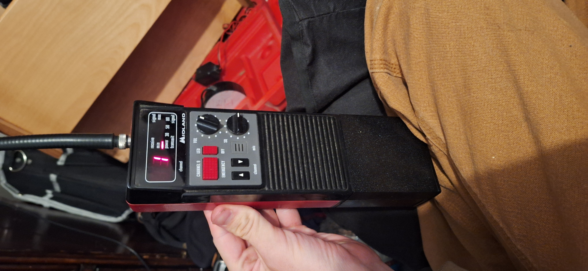

I am Joseph!
I like computers, cars, just general tech. I am also planning on become a mechanic of some kind.
This is my PDA (Personal digital assistant) That i found at a thrift store.
I got this midland CB Radio from the thrift store, it runs on 8 Triple A Batteries.


These are some photos i have taken that i really like i am going to enter them into the fair next year.

 These are screenshots from one of my favorite games i also like Omori, Minecraft, Roblox, Escapists and Papers Please
These are screenshots from one of my favorite games i also like Omori, Minecraft, Roblox, Escapists and Papers Please
Framework makes laptops that are very repairable and upgradable and thats why i like it.
Nintendo makes consoles and games for those consoles some of which are my favorite games.
Discord is a social media platform which i find very useful for communication
 Macaroni & Cheese
Macaroni & Cheese